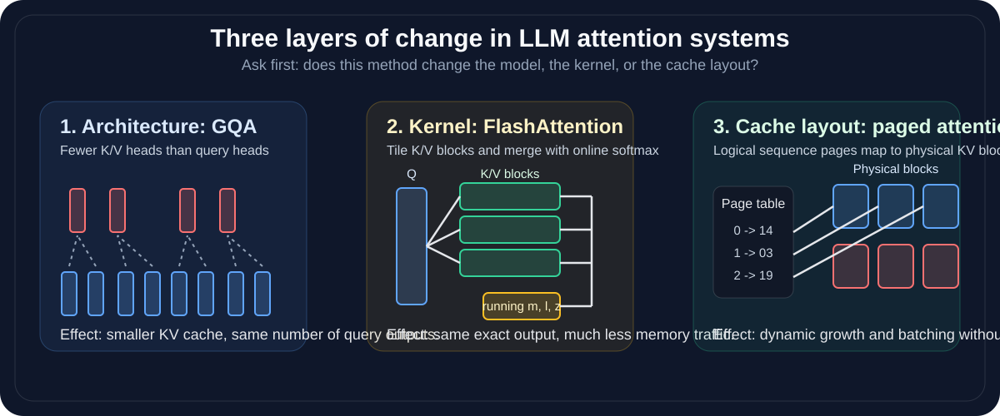
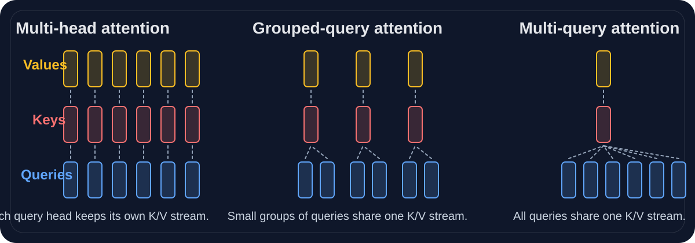
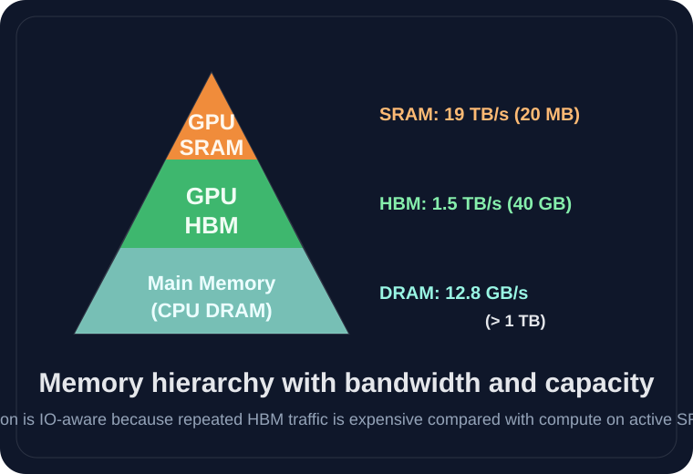

This note keeps the core attention math, then separates three ideas that are easy to mix up in LLM systems: architecture, kernel / execution schedule, and KV-cache layout. The goal is to make the current file easier to study, not just longer.

Let sequence length be n. Queries, keys, and values are
For query token i, attention first scores all key tokens:
Then it normalizes those scores row-wise:
\[ \alpha_{ij} = \frac{\exp(s_{ij})}{\sum_m \exp(s_{im})} \]And finally computes a weighted sum of values:
\[ o_i = \sum_j \alpha_{ij} v_j \]QK^T compares every query with every key.V mixes information from tokens that received high weight.The dot product grows with dimension. If scores become too large, softmax becomes too sharp and gradients become less useful.
Instead of using one attention map, the model uses multiple heads that learn different projections of the same input.
Standard multi-head attention gives each query head its own key head and value head. GQA keeps many query heads but uses fewer K/V heads, so several query heads share the same K/V stream.

Let \(H_q\) be the number of query heads and \(H_{kv}\) the number of key/value heads. Define the group size
\[ g = \frac{H_q}{H_{kv}}. \]Then the projected tensors are
\[ Q = XW^Q \in \mathbb{R}^{n \times H_q \times d_h} \] \[ K = XW^K \in \mathbb{R}^{n \times H_{kv} \times d_h}, \qquad V = XW^V \in \mathbb{R}^{n \times H_{kv} \times d_h} \]For query head \(h\), the shared K/V head index is
\[ r(h) = \left\lfloor \frac{h}{g} \right\rfloor. \]| Choice | Meaning |
|---|---|
| \(H_{kv} = H_q\) | Standard multi-head attention |
| \(1 < H_{kv} < H_q\) | Grouped-query attention |
| \(H_{kv} = 1\) | Multi-query attention |
During autoregressive generation, cached keys and values dominate memory cost. Per token, per layer, the number of cached elements is
\[ \text{KV elements per token} = 2 H_{kv} d_h. \]For standard multi-head attention, this would be \(2 H_q d_h\). So
\[ \frac{\text{KV cache in GQA}}{\text{KV cache in MHA}} = \frac{H_{kv}}{H_q} = \frac{1}{g}. \]FlashAttention does not change the attention formula. It changes how exact attention is executed so large intermediate matrices do not have to be materialized in slow memory.

Modern GPUs can do a lot of arithmetic, but moving data is often the real bottleneck. In practice:
The problem is that many naive implementations store \(S \in \mathbb{R}^{n \times n}\) and sometimes \(A \in \mathbb{R}^{n \times n}\) in global GPU memory. Those tensors are large, and moving them around is expensive.
Split \(K\) and \(V\) into blocks of size \(B\):
\[ K = \begin{bmatrix} K^{(1)} \\ K^{(2)} \\ \vdots \\ K^{(T)} \end{bmatrix}, \qquad V = \begin{bmatrix} V^{(1)} \\ V^{(2)} \\ \vdots \\ V^{(T)} \end{bmatrix}. \]For one query row \(q\), process those blocks one at a time instead of forming all scores at once.
For block \(t\), compute local scores
\[ s^{(t)} = \frac{q K^{(t)T}}{\sqrt{d_h}} \in \mathbb{R}^{B}. \]Maintain a running row maximum \(m\), denominator \(\ell\), and numerator \(z\):
\[ m^{(0)} = -\infty, \qquad \ell^{(0)} = 0, \qquad z^{(0)} = 0. \]Paged attention also keeps the same attention formula. It changes how the KV cache is stored during autoregressive decoding, especially when a serving system must handle many sequences with different lengths.
At generation step \(t\), one layer stores keys and values for all previous tokens:
\[ K_{\mathrm{cache}}, V_{\mathrm{cache}} \in \mathbb{R}^{t \times H_{kv} \times d_h}. \]If this cache is one long contiguous tensor, growing it for many sequences is awkward and can fragment memory.
Choose a page size \(B\) tokens and split the sequence dimension into pages:
\[ K^{(p)}, V^{(p)} \in \mathbb{R}^{B \times H_{kv} \times d_h}, \qquad p = 0, 1, \dots, P-1, \qquad P = \left\lceil \frac{t}{B} \right\rceil. \]For each sequence \(s\), maintain a page table
\[ \beta_s = [b_s^{(0)}, b_s^{(1)}, \dots, b_s^{(P-1)}]. \]Token index \(\tau\) maps to page and offset by
\[ p = \left\lfloor \frac{\tau}{B} \right\rfloor, \qquad o = \tau \bmod B. \]The actual cached entries read by head \(h\) are
\[ k_{s,\tau,h} = K^{\mathrm{phys}}_{b_s^{(p)}}[o,h,:], \qquad v_{s,\tau,h} = V^{\mathrm{phys}}_{b_s^{(p)}}[o,h,:]. \]A kernel can read one page or one block of K/V at a time and still apply the same online-softmax update used by FlashAttention.
Self-attention by itself is permutation-equivariant, so the model needs extra structure to know token order and to prevent future-token leakage during autoregressive decoding.
The base 10000 spreads wavelengths across dimensions so some coordinates capture short-range order while others vary slowly over long distances.
That mask enforces the autoregressive rule that token \(t\) may attend only to positions \(<= t\).
| Method | What changes? | Does the formula change? | Main gain |
|---|---|---|---|
| GQA | Head sharing pattern: fewer K/V heads than query heads | Yes, because the architecture uses shared K/V projections | Smaller KV cache while keeping many query heads |
| FlashAttention | Execution schedule and tiling | No | Lower memory traffic for exact attention |
| Paged attention | KV-cache allocation and lookup | No | Efficient long-context serving across many requests |